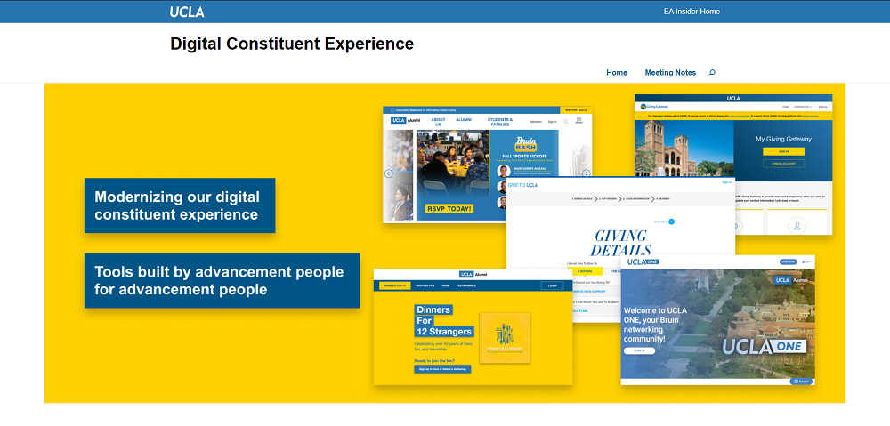
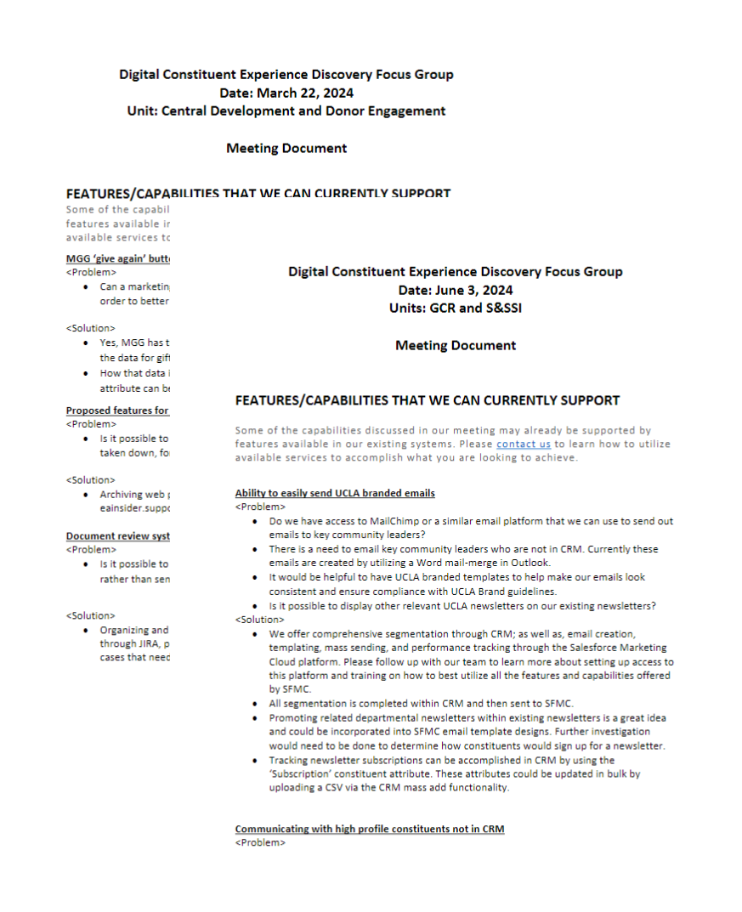

UCLA Digital Constituent Experience
Project Overview
UCLA's External Affairs division spans over 20 teams — each managing its own digital presence, constituent communications, and web properties. Despite sharing the same donors, alumni, and stakeholders, these teams operated in silos with no shared digital strategy, resulting in fragmented experiences for UCLA's constituents.
Working alongside the Technology Product Manager of UCLA ATS, I led the Digital Constituent Experience Discovery Series — a structured research initiative designed to surface shared pain points and build cross-divisional alignment around a unified digital strategy.
Design Process
1. Research Planning
Defined the research objectives in collaboration with the Product Manager: understand current digital pain points, map constituent journey touchpoints, and identify opportunities for standardization. Recruited eight External Affairs teams and tailored interview guides for each unit's specific context.
2. Focus Group Facilitation
Facilitated a series of structured focus groups with stakeholders across UCLA External Affairs. Each session used a tailored presentation deck with discussion prompts designed to surface both pain points and team-specific digital priorities, while conforming to UCLA Brand Guidelines.
3. Synthesis & Documentation
After each session, the team reviewed notes and recordings to compose a post-meeting digest — a structured summary of feedback, action points, and key themes. These were published to the initiative's WordPress site so all teams could review findings from other departments' sessions.
4. Marketing Site Design & Build
Designed and built a WordPress marketing site to give the initiative a central home. The site explained the Discovery Series goals, housed all research outputs, and served as a reference for stakeholders across the division. I also created a Figma Style Library containing UCLA brand elements to accelerate future design work.
Research Findings
- Teams were duplicating digital work — 6 of 8 departments had independently built their own event registration microsites with no shared infrastructure
- Constituent data was siloed: alumni who donated through one platform were treated as unknown contacts when engaging with another unit's web property
- Staff cited "lack of a shared design language" as the biggest barrier to presenting a unified UCLA brand to external constituents
Key Screens




Before & After
- No shared digital strategy across EA teams
- Fragmented constituent experience across 20+ properties
- Siloed feedback with no cross-team visibility
- No Figma brand library for the division
- Unified digital strategy endorsed by 8 EA teams
- Shared constituent journey map and design principles
- Published research digests accessible to all teams
- Figma brand library distributed across the division
Outcome
The Discovery Series produced a cross-divisional digital strategy with buy-in from eight External Affairs teams. The research outputs — synthesized into post-meeting digests and a live reference site — gave the division a shared foundation for future digital investments. The Figma Style Library became an ongoing resource for web and marketing work across UCLA Advancement.